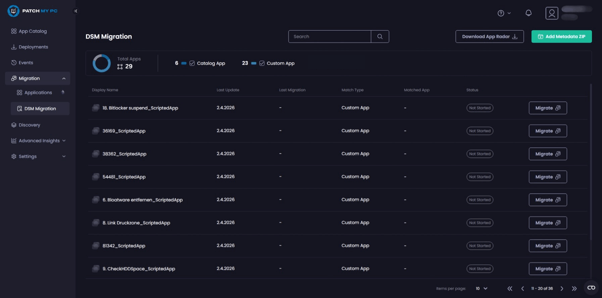
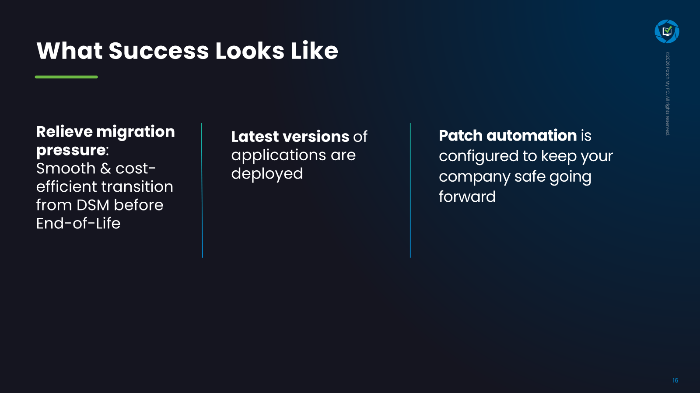

Patch management is the process of planning, testing, and deploying software updates and security patches across endpoints in a controlled manner. Especially for third-party applications, this remains a recurring challenge for many IT teams because whenever an update becomes available, it needs to be detected, packaged, tested, and deployed securely, reliably, and in a way that can be audited. And the challenge will only become bigger: With the emergence of AI models like Claude Mythos, the frequency of security patches is expected to significantly increase. With the Ivanti DSM End of Life (EOL) approaching, many organizations in the DACH region are facing three key questions.
- Which solution will take over endpoint management, server management, and software distribution in the future?
- How can application packages with years of package logic, eScript code, dependencies, and operational knowledge be migrated from Ivanti DSM to a new platform?
- How can the third party patchingchallenge be solved long term?
For many DSM (Desktop & Server Management) customers, this is about more than selecting a new tool. It is about managing a controlled transition to a sustainable long-term operating model.
So where should organizations begin? It starts with understanding what Ivanti DSM’s end of life actually means, the options available for replacing it, and what a successful migration path looks like. Finally, it will show a path on how to smoothly migrate apps from Ivanti DSM to Microsoft Intune and ConfigMgr.
When Does Ivanti DSM Reach End of Life?
Ivanti DSM reaches its official End of Life on December 31, 2026. From that date onward, regular vendor support for Ivanti Desktop and Server Management will end. Organizations will no longer receive official product updates or standard support services. Only very few large organizations were offered another support extension by Ivanti. IT teams should check their license expiry date in DSM to avoid unexpected problems, as there were some customers who shifted to a subscription model in the past, meaning access to DSM could be lost.
This leaves a limited window to evaluate, test, and implement a replacement solution. The challenge goes beyond selecting a platform. Existing software packages, deployment processes, OS deployment workflows, permissions, target groups, and operating models all need to be reviewed. The larger the DSM environment, the earlier planning should begin.
What Happens After Ivanti DSM Support Ends?
After support ends, continuing to operate Ivanti DSM becomes increasingly risky. Without official updates, bug fixes, or security patches, organizations may face greater security, operational, compliance, and audit risks. This is especially important in regulated industries or environments with strict audit requirements, where vulnerabilities may no longer be addressed through supported product updates. That risk is not theoretical. In March 2026, Ivanti released a high severity security update for DSM to address a local privilege escalation vulnerability.
DSM will also become more difficult to operate from a technical perspective. New Windows versions, modern endpoint scenarios, and cloud management requirements may no longer be reliably supported. At the same time, DSM expertise often becomes harder to find. Experienced administrators move into new roles, projects, or organizations, making troubleshooting and maintenance more challenging.
Simply running DSM until the last possible day is rarely the best strategy. A planned transition with a clearly defined target platform, prioritized applications, and a realistic timeline is usually the safer approach.
Common Ivanti DSM Replacement Options
There is no direct one-to-one replacement that automatically replicates every DSM capability. The right solution depends heavily on the existing environment. Key considerations include cloud strategy, application portfolio, OS deployment requirements, server management needs, licensing models, and operational processes.
Many organizations evaluate Microsoft Intune, Microsoft Configuration Manager, baramundi, or Ivanti Neurons. Other options include Matrix42 Empirum or Tanium. In practice, hybrid target architectures are common. For example, Intune may be used for modern unified endpoint management (UEM) while another solution handles complex software distribution, servers, or specialized requirements.
A meaningful evaluation should go beyond comparing feature lists. The critical question is whether the new platform can support an organization’s real-world processes as well as how much a solution can adapt to the organization and vice versa. This includes installation logic, detection methods, repair actions, rollback procedures, user context handling, dependencies, maintenance windows, and reporting.
| Option | Strengths | Typical Challenges |
|---|---|---|
| Microsoft Intune | Cloud endpoint management, Autopilot, compliance, mobile device management | Complex DSM logic like packages, userparts, parameters and installation orders often needs to be redesigned. No full Windows Server management through standard Intune enrollment. Selected endpoint security settings can be managed through Microsoft Defender for Endpoint. |
| Microsoft Configuration Manager | Strong traditional software distribution, on premises and hybrid scenarios | Operational overhead, maintaining on-premise infrastructur and licensing can be significant if used for servers. Also the packaging challenges mentioned for Intune remain. |
| baramundi | Windows focused client management, software distribution, patch management | Packages (especially in this case Userparts) and operational processes must be migrated carefully. On-premise infrastructure must be maintained. |
| Ivanti Neurons | Modern Ivanti platform for IT and endpoint management | Not a simple DSM upgrade but a full platform migration. Not strong for software deployment but focuses more on DEX. |
Microsoft Intune
For many DSM customers, Microsoft Intune is the most obvious target platform. It provides strong capabilities for modern cloud endpoint management, Windows Autopilot, compliance management, mobile device management, and integration with Microsoft 365 and Entra ID. For organizations expanding their cloud native endpoint strategy, Intune is often a central component.
Another clear advantage is licensing. Intune is already included in many Microsoft 365 plans or can be integrated into existing Microsoft investments. This makes it particularly attractive for organizations moving toward cloud management.
However, Intune is not automatically a complete replacement for every DSM scenario. Traditional software distribution, complex installation logic, layered dependencies, and all server management requirements often need to be handled differently. For many organizations, Intune becomes the primary target platform, but not necessarily the complete answer for every DSM use case.
Microsoft Configuration Manager / MECM
Microsoft Configuration Manager, often still referred to as SCCM or MECM, remains a strong option for traditional Windows environments. It is particularly well suited for organizations with large numbers of on-premises clients, complex software distribution requirements, servers and other high availability endpoints, and established Microsoft management processes.
The transition from DSM to Configuration Manager is often closer to familiar client management workflows than a pure cloud migration. Applications, collections, task sequences, and detailed client control align well with environments that continue to operate on premises or in hybrid models.
Configuration Manager can also be used alongside Intune through co-management. This is attractive for organizations that want to adopt Intune gradually while continuing to manage certain workloads through traditional methods or need a mature solution to manage servers while fully taking advantage of Intune’s modern capabilities. At the same time, infrastructure requirements, operational complexity, and Microsoft’s decreasing ConfigMgr focus should be carefully evaluated.
baramundi
baramundi is a well-established endpoint management solution in the German-speaking market. The platform combines real-time software distribution, patch management, inventory management, OS deployment, and vulnerability management within a single interface. It is particularly attractive for organizations looking for a practical and relatively easy-to-manage solution for Windows clients and servers.
For many IT teams, baramundi also plays a role in hybrid operating models. The platform can be used alongside Intune and supports co-management scenarios. While Intune delivers modern cloud endpoint management & security capabilities, baramundi often handles server management, traditional software distribution, or detailed administrative processes within the corporate network.
Ivanti Neurons
Ivanti positions Neurons as a modern platform for IT and endpoint management. For existing Ivanti customers, this may initially seem like a natural choice. However, there is no clearly defined migration path from Ivanti DSM to Ivanti Neurons and these are completely different platforms. Organizations should therefore evaluate early how existing applications, package logic, and operational processes can be transferred.
Moving from Ivanti DSM to Ivanti Neurons is not a simple upgrade. Existing DSM packages, eScript logic, and operational workflows cannot be transferred. Many organizations must redesign their software distribution, packaging standards, and deployment processes.
DSM was particularly strong in traditional software distribution for many years. Companies expecting the same depth of functionality should carefully validate their requirements against Ivanti Neurons. The vendor name alone is less important than whether the platform can reliably support day-to-day operational needs.
Why Application Packaging Becomes a Migration Challenge
Over the years, organizations build package logic, special cases, dependencies, workarounds, and operational knowledge into their DSM environments. Some packages work perfectly but are poorly documented. Others contain assumptions that no longer fit modern management platforms. Depending on organization size and complexity, we are often talking hundreds, sometimes thousands, of apps that need to be migrated to the new endpoint management solution.
This is why application packaging becomes a critical path during a DSM migration. Without working applications, there is no successful endpoint migration. The platform may be selected, devices may be prepared, and management approval may be secured. But if business-critical applications cannot be installed, patched, detected, repaired, or removed reliably, the project will stall.
Target platforms operate differently from DSM. Detection rules, installation context, return codes, reboot behavior, user interaction, and dependency handling often need to be redesigned. Migration is therefore more than a technical export process. It is an opportunity to clean up, standardize, and modernize the application portfolio for the long term, but also the biggest DSM migration challenge!
What Happens to eScript Packages During Migration?
Existing eScript packages generally cannot be reused directly on a new platform. eScript is tightly integrated with DSM. Commands, conditions, and workflows – the whole eScript language is specifically designed for DSM. When moving to a new platform, this logic must first be understood and then rebuilt appropriately.
Each package should be analyzed systematically. What happens during installation? Which detection methods could be used? Is there repair logic? How does uninstallation work? Does the package trigger a reboot? Does it run in system and/or user context? Are there dependencies on other applications, files, registry keys, or groups?
Simple packages can often be rebuilt relatively quickly. Complex packages require significantly more analysis and testing. Packages with extensive conditions, legacy components, user interaction, parameters, and retries after reboot are particularly challenging. In these cases, simply translating commands is rarely enough. The underlying logic must be reviewed and adapted to a new standard.
Can eScript Be Converted to PowerShell or PSADT?
Yes, eScript packages can be migrated to PowerShell or PSAppDeployToolkit (PSADT), and many commands have a PowerShell or PSADT equivalent. However, DSM logic is often very unique. What worked well in DSM is not automatically the best solution in Intune or Configuration Manager.
PowerShell provides flexibility and modern automation capabilities. PSADT adds structure, logging, user interaction, exit code handling, and standardization. This becomes especially important when managing large application portfolios because consistent standards simplify ongoing operations and future maintenance.
The most effective approach is usually not to translate eScript directly. Instead, organizations should analyze the existing logic, remove outdated elements, define a target standard, rebuild the package, and perform thorough testing. This results in a migration that is more reliable, easier to maintain, and better aligned with modern endpoint management practices.


For everything else, Patch My PC and SOFTTAILOR, the German specialists for Endpoint Management and application packaging, have developed an automation-enabled migration approach that helps organizations move applications from Ivanti DSM to Intune and ConfigMgr faster and with greater consistency. By analyzing existing package logic and reducing manual migration effort, the process not only accelerates the transition but also helps create more reliable and maintainable application packages for the long term.
How to Prepare for an Ivanti DSM Migration


A successful DSM migration starts with strategy rather than technology. Organizations should first define the requirements their future platform must meet. Over the past 12 months, SOFTTAILOR has helped many organizations define their individual requirements catalog.
Based on those requirements, potential target platforms can be evaluated. Intune, Configuration Manager, Baramundi, Ivanti Neurons, and other solutions each offer different strengths. The key question is not which platform has the most features, but which one best supports the organization’s processes and long-term goals.
Once the target architecture has been defined, standards for packaging, testing, and deployment should be established. Many organizations use the migration as an opportunity to reduce custom solutions and introduce consistent processes. This simplifies both the migration itself and ongoing operations afterward. PSADT will be your hero here for application packaging.
Clear ownership is equally important. Who defines technical standards? Who is responsible for package migration? Who performs business validation testing? A well-structured project model helps prevent delays and provides transparency for all stakeholders.
Two of the most important questions: How do I solve the app migration challenge smoothly, and how do I set up third-party patch management in the long run? Patch My PC and SOFTTAILOR can help you with all of that.
Next Steps for Organizations Running DSM Today
A DSM migration takes time, especially when large numbers of software packages, eScript packages, and established operational processes are involved. The timeline may appear comfortable at first glance, but even medium-sized environments can quickly consume the available time.
Now is the right time to understand the actual migration effort. This starts with analyzing the application portfolio. Which applications are business critical? Which packages can be migrated, replaced, or retired? Where does complex eScript logic create additional effort?
Interested in how Patch My PC and SOFTTAILOR can help you with your Ivanti DSM migration? Get a first glance of how our migration approach works from this webinar and reach out to the SOFTTAILOR team to discuss more details.